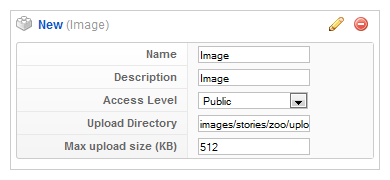
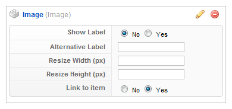

Image Element
In this tutorial you learn how to configure an image element with its specific values to use it in the ZOO extension.
How you create an element like this, we show you in {doc: create-new-types text: this tutorial}. There are two versions of the Image element. The regular version and the one that is distributed with the Widgetkit. The second one enables you to use the lightbox and spotlight features.
1. Configuration

Here is the description of the different values:
Name: Type in the name for this element which will be used later on, for example in the item creation view or as label in the frontend. With the name you also can identify the element, when you assign it to a template position.
Description: The description will show up as a tooltip in the item creation view.
Upload Directory: The destination directory where images are stored after submission.
Max upload size (KB): Restrict the max. filesize of the image for submission.
2. Element Assignment

Every element has to be assigned to a template position to show up for the visitors in the frontend of the site. See {doc: assign-elements-to-layout-positions text: this tutorial} how to assign elements to the template positions.
You can set whether the label is shown in the frontend or not. If you choose Yes the name of the element (see previous step) is used for it. If you do not want to use the elements name as label you can type in an alternative. Of course the Show Label option have to be enabled to show the alternative label.
If you want to resize the image you can set the dimensions in the two Resize fields.
With the Link to item option you can put an automatically generated link to the ZOO item on the image.
3. Item Creation

This is how the element looks when you create an item. See {doc: create-and-manage-items text: this tutorial} for creating an item. Click on Select Image and a lightbox appears, where you can select the image.
At the bottom you have two or four (depending on wether you have Widgetkit installed) links to put additional features to the image like typing in a title, add a link to the image including a custom rel tag and upload a separate image to open in the lightbox when the image is clicked.